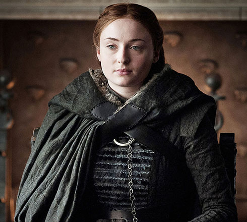

Sansa Stark
Queen Sansa Stark is the eldest daughter of Lord Eddard Stark and his wife, Lady Catelyn, sister of Robb, Arya, Bran, and Rickon Stark, and "half-sister" of Jon Snow.
Initially betrothed to Prince Joffrey Baratheon, the heir to the Iron Throne, Sansa travels to King's Landing in preparation for her nuptials, but essentially becomes a hostage of House Lannister following the execution of her father on trumped-up charges of treason.
Under the (sometimes unwitting) tutelage of Cersei Lannister, Margaery Tyrell, and Petyr Baelish, Sansa becomes well versed in politics and court intrigue, but suffers all the same.
Even after escaping the capital and returning to her childhood home of Winterfell, she endures further hardship at the hands of House Bolton. After escaping from Winterfell with the help of her father's former ward, Theon Greyjoy, and her sworn-sword, Brienne of Tarth, Sansa reunites with Jon at Castle Black.
Along with the support of the Free Folk, the knights of the Vale, and certain Northern houses, the two of them retake Winterfell from Ramsay Bolton, and Sansa becomes the Lady of Winterfell, whilst Jon is declared King in the North.
Displeased at Jon for abdicating his title in favor of House Targaryen, she finds enmity with Queen Daenerys, who refuses to accept Northern independence in her restoration and quest for the Iron Throne. Following the Battle of King's Landing and Daenerys's subsequent assassination, Sansa declares the North an independent kingdom and is later crowned Queen in the North.